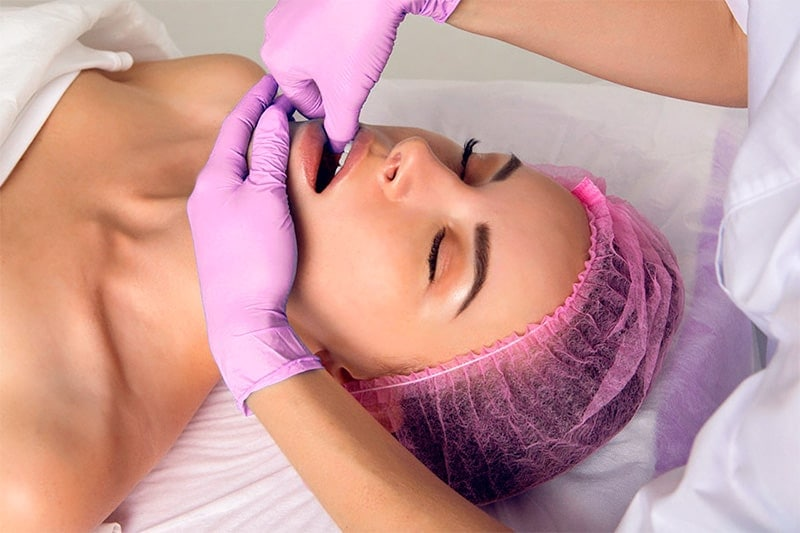

Буккальный массаж – оригинальная методика интенсивной мануальной стимуляции области щек, губ и носогубных складок. Название происходит от латинского слова bucca – щека. Суть метода в том, что пальцы массажиста интенсивно воздействуют на ткани снаружи и внутри ротовой полости.
Анти-возрастной массаж в Эстонии
Успей записаться